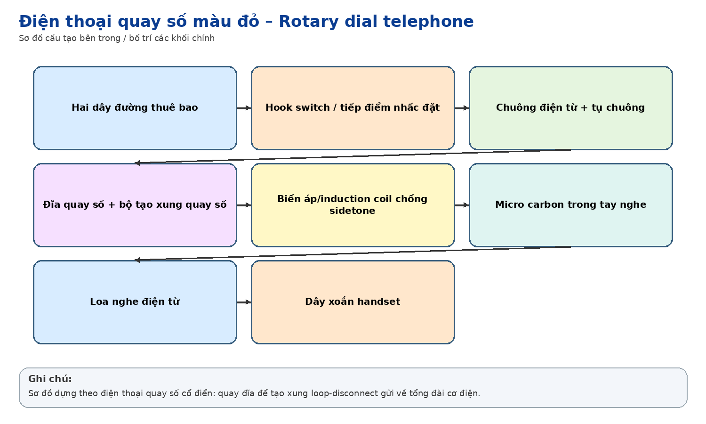
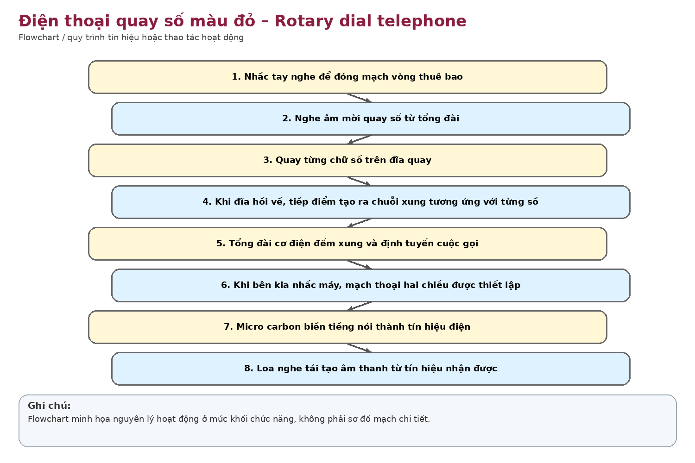

Nhận dạng & niên đại
Công dụng
Công dụng chung
Điện thoại thuê bao quay số bằng xung DC (loop-disconnect/decadic pulse) để gọi qua tổng đài.
Trong thông tin tín hiệu đường sắt
Có thể dùng làm máy lẻ văn phòng/nhà ga hoặc thuê bao tổng đài nội bộ của đơn vị đường sắt.
Phạm vi làm việc
Thiết bị cơ điện đơn giản, bền, không cần nguồn điện lưới tại máy nhưng phụ thuộc tổng đài và đôi dây thuê bao.
Cấu tạo bên trong

Handset gồm microphone và receiver; đĩa quay số; cơ cấu lò xo và cam; tiếp điểm tạo xung; hook switch; chuông điện từ; tụ/coil mạng thoại và dây thuê bao.
Cách thức hoạt động

Khi quay số và thả đĩa, cơ cấu cơ khí ngắt mạch vòng thuê bao thành số xung tương ứng với chữ số. Tổng đài cơ điện/analog đếm xung để định tuyến cuộc gọi; khi nhấc handset, hook switch đóng mạch thoại.
Thông số kỹ thuật
Thông số chính
Không xác định được thông số model. Chức năng cốt lõi: quay số xung thập phân, thường số 1 tạo 1 xung… số 0 tạo 10 xung.
Nguồn điện / cấp nguồn
Thông thường nhận nguồn DC từ tổng đài (common-battery); chuông nhận điện áp AC gọi từ tổng đài.
Giá trị lịch sử – trưng bày
Đại diện cho thời kỳ điện thoại quay số và tổng đài cơ điện/analog, trước khi điện thoại phím DTMF và tổng đài điện tử số trở nên phổ biến.
Tình trạng quan sát
Máy màu đỏ còn đĩa quay số, handset và dây; chưa thấy logo/tem nhà sản xuất trong ảnh.
Ảnh hiện vật
Xác minh thêm & nguồn tham khảo
Căn cứ mốc sử dụng tại Việt Nam/ĐSVN:
Chỉ
suy luận theo kiểu máy; cần tem đáy/serial.